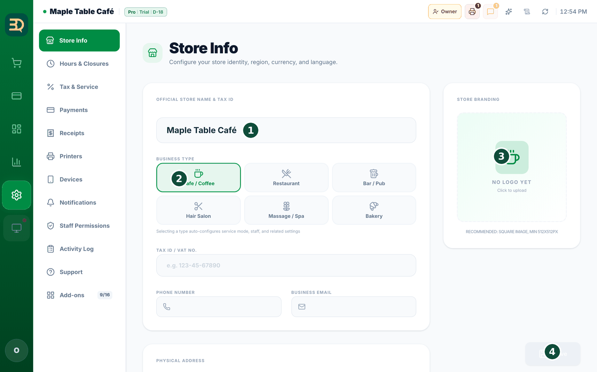
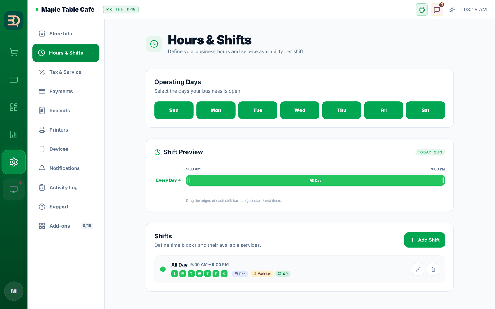
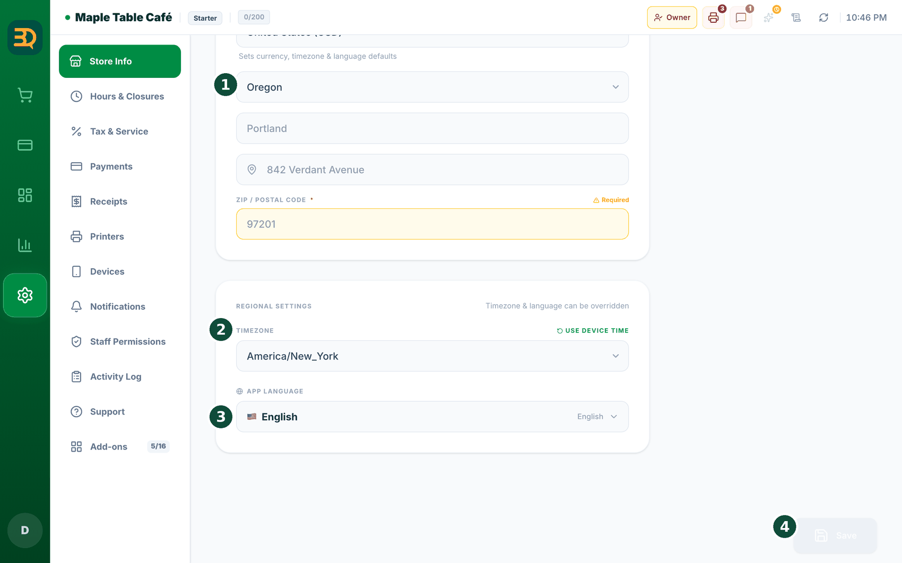
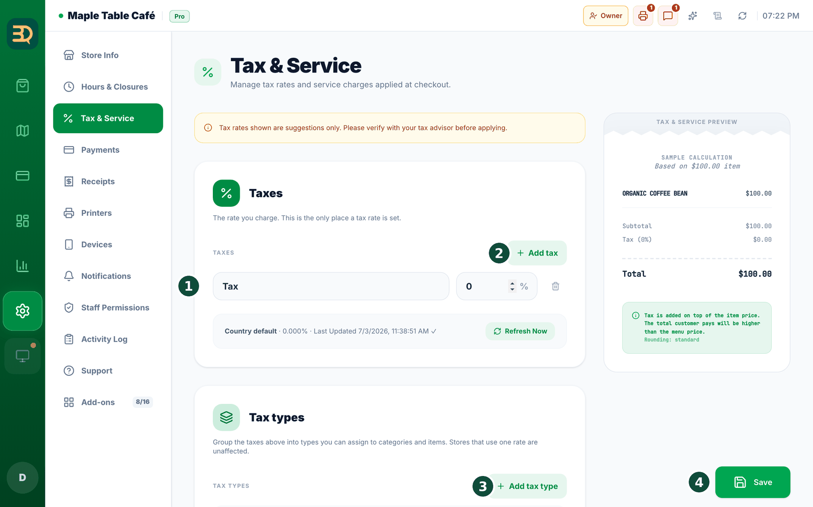
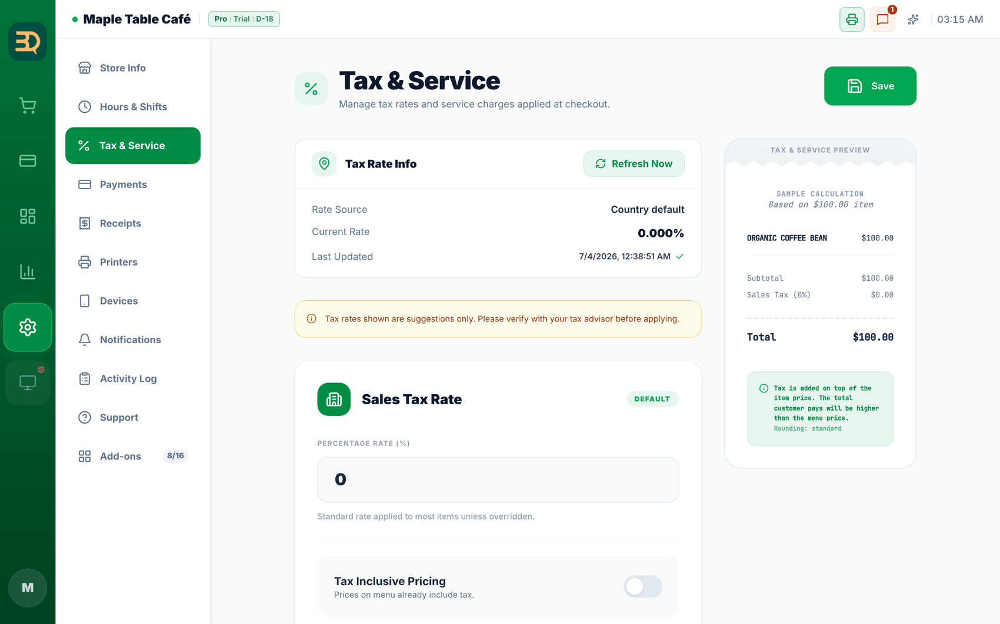
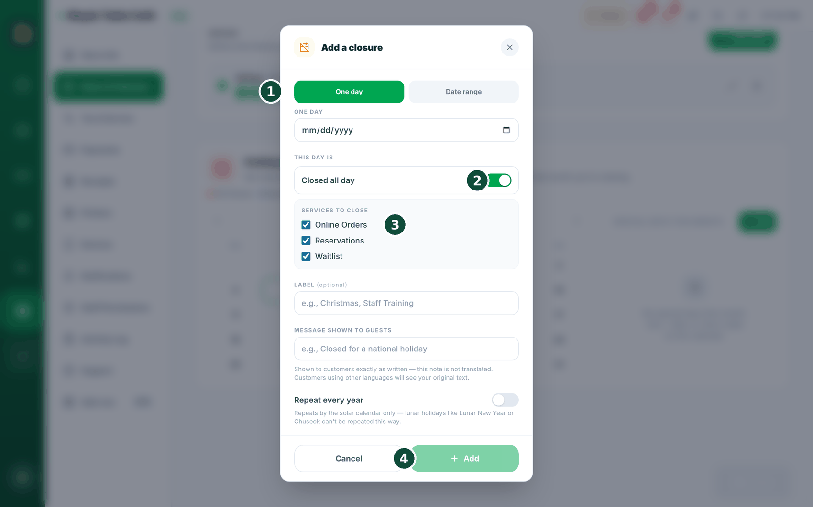

3Configurar su tienda
Ahora completemos los datos básicos de su tienda. Solo se hace una vez. Vaya con calma, un campo a la vez.


- Toque Settings (el ícono de engranaje) cerca de la parte inferior de la barra lateral izquierda.
- Toque Store Info (Info de la tienda).

- Escriba el nombre de su tienda, la dirección y la moneda que usa (como dólares o pesos).
- Compruebe que el tipo de negocio sea correcto (cafetería, restaurante, etc.). Esto configura por usted las mesas, el personal y los inicios de sesión con PIN.
- Abra Hours & Closures (Horario y Cierres) y escriba el horario en que abre su tienda. Este horario indica a BrewDesk cuándo los clientes pueden reservar una mesa, unirse a la fila y pedir por teléfono.
- Abra la configuración de impuestos. BrewDesk agrega el impuesto correcto por usted, así que no tiene que hacer cuentas.
- Agregue los detalles del recibo, como su logotipo y un mensaje de agradecimiento al final.
- Toque Save (Guardar). Su tienda ya está configurada.
Es bueno saberlo: algunos países tienen normas de facturación electrónica o de registro fiscal que todavía no admitimos, por eso no se ofrecen. Si elige uno y guarda, verá "This country is not supported.". Si su país no está en la lista, contacte con soporte.
Configurar sus impuestos
El impuesto es el dinero adicional que el gobierno pide sobre una venta. Solo lo configura una vez y luego BrewDesk lo agrega por usted en cada venta. Dejemos bien su tasa.
Toque Settings (Configuración) en la barra lateral izquierda y luego abra Settings › Tax & Service.
- BrewDesk puede sugerir una tasa para su zona, pero usted la confirma. Toque Refresh Now para obtener una tasa sugerida, o simplemente escriba la suya.
- Escriba su tasa en el campo de tasa de la fila del impuesto (el campo numérico con un % al lado, a la derecha del campo de nombre que dice Tax (Impuesto)); por ejemplo, escriba 8 para un 8 %.
- Elija cómo se muestra el impuesto. Con Tax Inclusive Pricing (Precios con impuesto incluido) activado, el impuesto ya está incluido en el precio que muestra. Desactivado, el impuesto se suma al cobrar.
- Opcional: agregue un Service Charge (un % o un importe fijo) y elija si el cargo por servicio paga impuesto.
- Toque Save (Guardar). Una vista previa del recibo a la derecha muestra un cálculo de ejemplo para que compruebe que se vea bien.
- Una nota le recuerda que las tasas de impuesto son sugerencias; confirme la suya con su asesor fiscal.
Settings › Payments, y solo afecta al efectivo. Consulte Redondeo de pagos en efectivo.¿Productos distintos, impuestos distintos? Use los tipos de impuesto
En algunos lugares los productos pagan impuestos distintos; por ejemplo, los comestibles básicos pueden no tener impuesto mientras que una bebida caliente sí. Si es su caso, BrewDesk puede guardar varios tipos de impuesto y usted elige el adecuado para cada producto. Si todos los productos de su tienda usan la misma tasa, puede saltarse esto: para usted no cambia nada.
Abra Settings › Tax & Service y busque la tarjeta Tax types. Aparece para las tiendas de lugares que lo necesitan (Canadá, por ejemplo) y para algunas tiendas de Estados Unidos que lo activan.


- Toque Set up tax types. BrewDesk completa los impuestos habituales de su región. Si los suyos son distintos, una nota amarilla dice "These taxes don't match the standard for your region."; toque Use regional standard para corregirlos con un toque.
- En Taxes, cada impuesto tiene un Tax name y una Tax rate (%). Toque Add tax para agregar otro. Este es el único lugar donde se fija una tasa de impuesto.
- En Tax types, toque Add tax type, póngale un Tax type name y marque los "Taxes that apply". Elija No tax (exempt) para lo que no lleva ningún impuesto.
- Un tipo está marcado como Default (Predeterminado). Se usa para cualquier producto que no tenga su propio tipo de impuesto y para el cargo por servicio.
- Vaya a Manage (Gestionar) › Menu Items (Artículos del menú) en la barra lateral izquierda. En una categoría, elija "Tax type for this category". En un producto, elija Tax type. Deje un producto en Follow category a menos que pague un impuesto distinto.
Es bueno saberlo: los recibos y los informes muestran cada impuesto en su propia línea, así que dos impuestos no pueden tener el mismo nombre; BrewDesk le pide cambiar el nombre de uno. Algunos lugares (Massachusetts y Rhode Island) gravan solo la parte que supera un límite; la condición de importe no puede reproducir eso, así que allí aparece una advertencia. Revise siempre su configuración con su asesor fiscal.
Feriados y días especiales
Marque los días en que cierra y BrewDesk impedirá que los clientes reserven una mesa, se unan a la fila o pidan desde su teléfono ese día. Feriados, capacitaciones del personal, un día libre imprevisto: todo se configura aquí.
Abra Settings › Hours & Closures y busque Holidays & Special Days (Feriados y días especiales) más abajo en la página. Puede usarlo aunque no tenga activado el complemento Reservations. El calendario está a la izquierda; la lista de cierres del mes que está viendo, a la derecha.

- Toque "+ Add" encima de la lista, toque una fecha en el calendario o toque una entrada existente de la lista: se abre una ventana.
- Elija la fecha o las fechas. Elija One day (Un día) para una sola fecha, o Date range (Rango de fechas) para cerrar varios días seguidos de una vez (hasta 31), útil para feriados de varios días.
- Active Closed all day (Cerrado todo el día). Una vez activado, elija qué se detiene en Services to close (Servicios a cerrar): reservas, lista de espera, pedidos en línea y por QR. Puede cerrar solo uno y dejar los demás abiertos.
- Escriba una Label (Etiqueta) breve, como "Navidad" o "Capacitación del personal". Lo que escriba en Message shown to guests (Mensaje para los clientes) es lo que verán sus clientes.
- Toque Save (Guardar). Aparece de inmediato en el calendario y en la lista.
Marque el día libre una vez y todo cierra a la vez. Su página de reservas, su fila y los pedidos desde el teléfono de sus clientes se cierran ese día, sin tener que ir desactivando cada cosa, y los feriados de varios días se pueden registrar de una sola vez.
Ver el estado de sus servicios de un vistazo
¿Pueden los clientes reservar ahora mismo? ¿Unirse a la fila? ¿Pedir desde su teléfono? Un conjunto de botones se lo dice al instante, para que lo sepa antes de que un cliente le diga que algo no funciona.
Toque Tables (Mesas) en la barra lateral izquierda para abrir la pantalla Table Map (Mapa de Mesas): la barra de herramientas de arriba tiene tres botones: Online Orders (Pedidos en Linea), Reservations (Reservas) y Waitlist (Lista de espera). No hay nada que activar: siempre están ahí. (Antes eran pequeñas etiquetas en la barra superior; ahora son botones más grandes en el mapa de mesas).
- El color del botón indica el estado: con color significa que funciona normalmente, gris significa que usted lo desactivó, gris con un reloj significa que está en pausa por ahora y gris con un candado significa que algo lo bloquea, como su plan o su configuración de pagos.
- Toque un botón para abrir "What customers can use right now".
- Le dice por qué algo está cerrado; por ejemplo, "Closed today", "Outside business hours", "Main POS is offline", "Requires the {plan} plan", "Payment setup required" o "Monthly order limit reached".
- ¿Necesita dejar de aceptar algo por un rato? Toque "Pause for today…" en la parte inferior.
- Elija el servicio y por cuánto tiempo: 20 minutes (20 minutos), 60 minutes (60 minutos), Until close today (se reabre solo en su siguiente apertura) o Until I turn it back on (Hasta que yo lo vuelva a activar).
Es bueno saberlo: el texto del motivo también aparece en la pantalla de sus clientes, para que no se queden preguntándose por qué no pueden pedir.
Temas relacionados
¿Necesita más ayuda?
Puede enviar un ticket de soporte desde la app en Settings › Support.